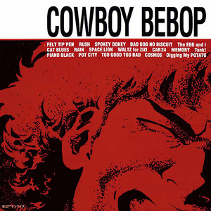

SYNOPSIS
Une histoire de 26 épisodes sur des chasseurs de primes ruinés qui voyagent à bord de leur navette appelée Bebop poursuivant des criminels.
Les personnages principaux sont Spike, un beau jeun homme agile
et futé, Jet, le capitaine de la navette,Faye Valentine,
ex criminelle qui les rejoint plus tard et Ed un jeune hackeur très
bizarre et énergétique.

De gauche à droite, Jet Spike Faye et Ed
Toute l'histoire est accompagnée par des musiques nostalgiques et dynamiques, pleines d'émotions composées pae Yoko Kanno, principalement du Bebop ou du Jazz, qui nous font sentir comme un vrai cowboy de l'espace.
YOKO KANNO
Est une compositrice, productrice et scénariste japonaise née en 1986. Elle dirige aussi un groupe appellé seatbelts, de blues & jazz. appellé Seatbelts, de blues et de jazz
Yoko Kanno pour le magazine 'New York Times'
RUSH-SEATBELTS
COWBOY BEBOP soundtrack SEATBELTS- 1998
Yoko Kanno dirige son groupe seatbelts en live